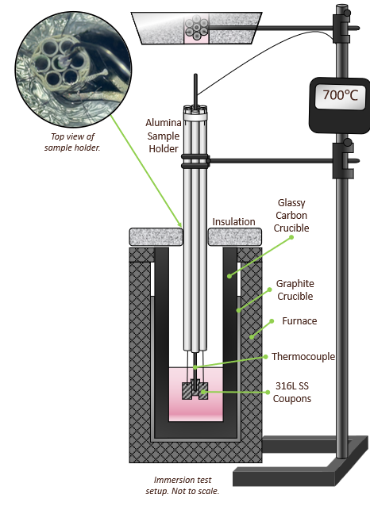
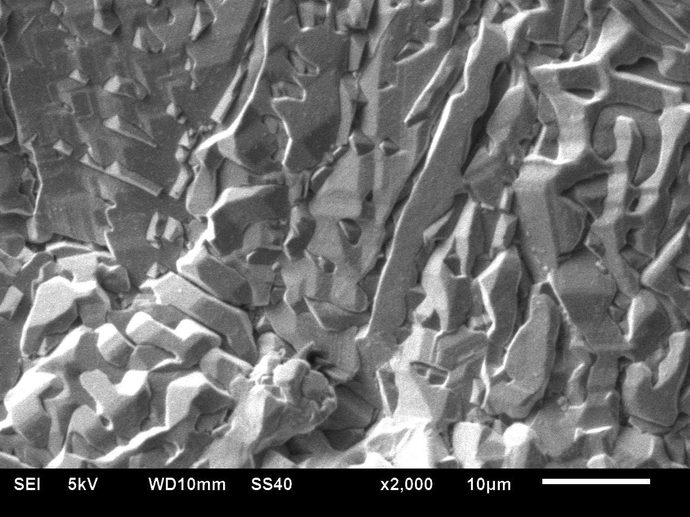
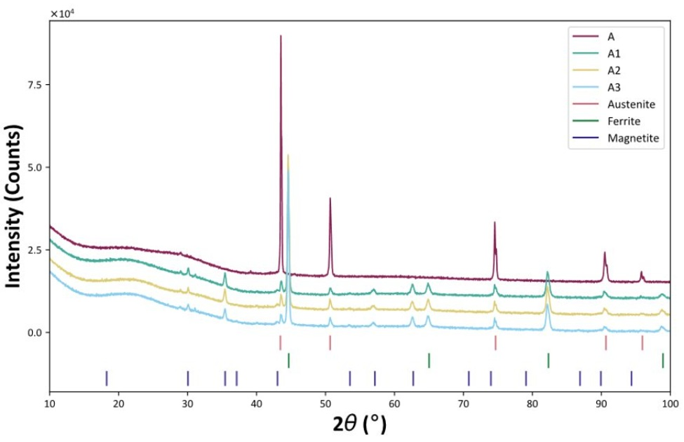

NSF REU Internship · Idaho Falls · Internships
Molten-salt corrosion testing

My contribution
I designed and conducted glovebox immersion tests of as-built LPBF 316L at 700 °C, comparing specimens produced at two scan speeds. I used mass-change measurements, SEM, EDS, and XRD to evaluate the exposed material.
SEM characterization

XRD characterization

EDS elemental mapping

Top Skills Utilized
Glovebox testing
SEM/EDS
XRD
Other Projects
 Laser notching for tungsten fracture testsResearch
Laser notching for tungsten fracture testsResearch Stable crack propagation in nuclear graphiteResearch
Stable crack propagation in nuclear graphiteResearch04Carbon Reduction ResearchOSU · AuYeung Group
Carbon Reduction ResearchResearch05Lunar rover mission and PSR cable systemNASA L’SPACE Mission Concept Academy
Lunar rover mission and PSR cable systemStudent Teams